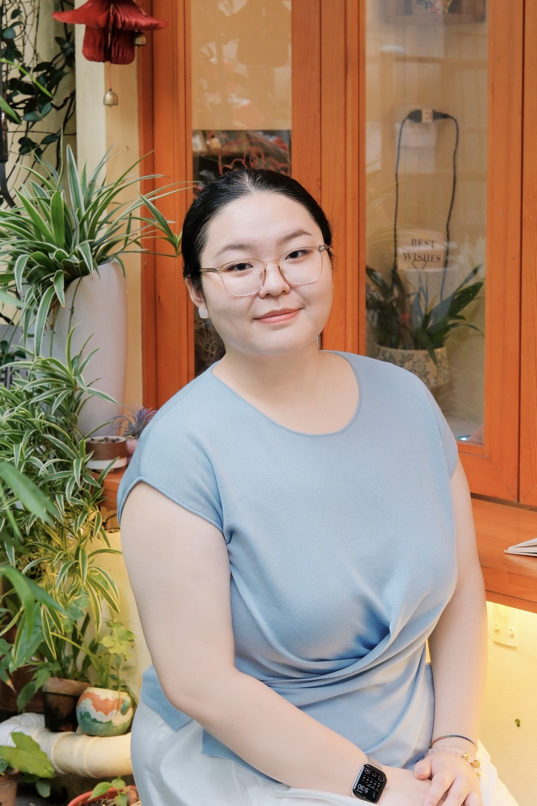

Abstract
Understanding immigrants' financial engagement is key to addressing structural barriers to financial inclusion. This study provides a descriptive account of how being unbanked and the use of credit, domestic transactional, and international remittance alternative financial services (AFS) vary with citizenship status and co-ethnic enclave concentration. Immigrants' AFS use reflects two distinct needs: cross-border ties to home countries and domestic needs within the U.S. Non-citizens exhibit higher unbanked rates and greater use of remittance AFS, with no corresponding increase in credit or domestic transactional AFS use. Instrumental variable estimates using 1990 settlement shares suggest that immigrants in areas with higher country-of-origin enclave concentration are more likely to be unbanked and, among non-citizens, to use domestic credit and transactional AFS, whereas remittance use does not vary with enclave residence. These findings offer a descriptive framework for understanding immigrant financial engagement, with implications for consumer policy on cross-border financial services.
Microeconomics, statistics, and math refresher for incoming Ph.D. students. Designed content, problem sets, and assessments.
Financial markets and instruments from the perspective of individual consumers, focusing on portfolio decisions over the life cycle.
Data analysis for consumer and business decisions, emphasizing evidence-based communication of analytical results.
Systems approach to family financial management, with emphasis on interpersonal counseling techniques for practitioners.
University of Wisconsin–Madison
Madison, WI 53706